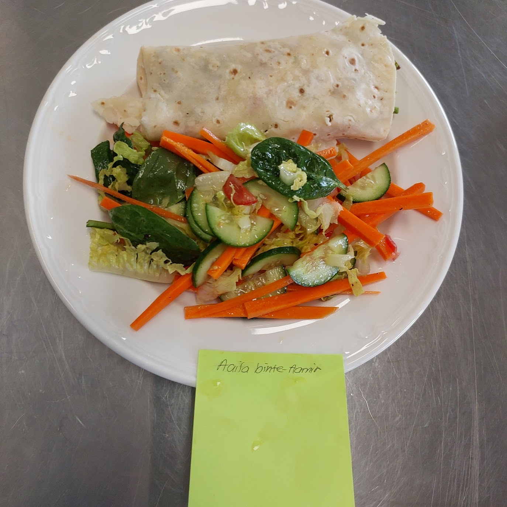

Omelet wrap with Cucumber salad
Ingredients
Omelet wrap
- 1 wholemeal gluten free wrap
- ¼ capsicum
- ¼ red onion
- 1/2 cup spinach
- 4 cherry tomatoes
- 1tbs Mayo
Salad
- ½ cucumber
- 2 cherry tomatoes-plenty of Vitamin C
- olive oil
- 1/2 carrot
- 1/2 cup spinach leaves
- pepper
- 3 cos lettuce leaves
- Salt
Method
Omelet Wrap
- Wash hands and wear appropriate PPE
- Gather the equipment on the bench
- Dice the tomatoes and red onion
- Crack the eggs into a medium sized bowl and whisk until fluffy
- .Pour the diced vegetables and spinach into the eggs
- Mix the omelet mixture thoroughly
- Heat the electric fry-pan until warm on medium-low
- Pour enough oil to cook the omelet
- Pour the omelet mixture into the electric-fry-pan
- Wait a minute before flipping it over carefully with a spatula
- Let the other side cook until the egg has mostly solidified
- Place your wholemeal omelet wrap on a plate and spread mayo around evenly.
- Fold the bottom, roll the wrap and lastly fold down the top, or roll the wrap as you wish
- (optional) Cut in half and Place the two halves in a plastic container
Salad
- Grab a green chopping board and knife
- Slice the cucumber in half, and then start cutting sidewards to make semicircle shapes
- Put the cut cucumbers in a medium bowl
- Cut the carrots into matchsticks and place them in bowl as wel
- Chop the lettuce
- Add the lettuce, spinach and cherry tomatoes to the bowl
- Season with the pepper, olive oil and a pinch of salt
- Mix the salad thoroughly
- Put the salad next to the wraps in the plastic container
Recipe Justifications
Capsicum-high in vitamin C
Red onion-good source of antioxidants
Cucumber-Source of Potassium, Magnesium and Manganese
Spinach leaves-High in iron
lettuce leaves-high in vitamin A
Egg-source of protein and Vitamin D
Carrot- source of Vitamin C
Cherry tomatoes- source of Vitamin C
Cooking methodFrying in olive oil was the best option becuase olive oil is known to reduce risk of heart disease.